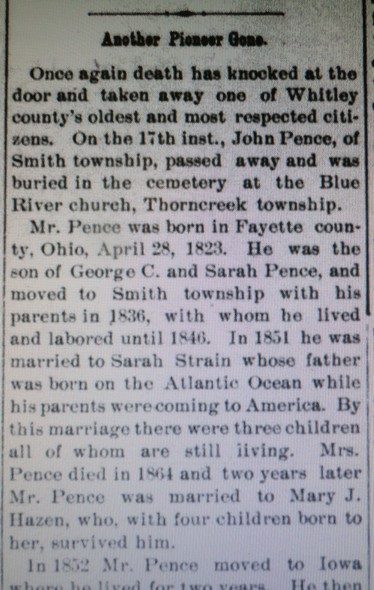
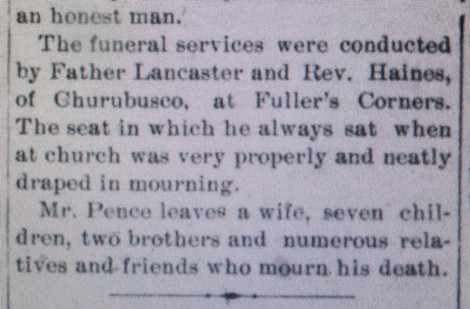

Obituary of John Pence from the Columbia City (Indiana) Post in 1895
An obituary for John Pence of Whitley county, Indiana from 1895.
Citation
"Another Pioneer Gone", obituary of John Pence, Columbia City (Whitley, Indiana) Post, 1895 January 2 (Wednesday), page 5; microfilmed newspaper, Peabody Public Library, Columbia City, Indiana.
Transcript of Obituary [paragraphs added]
Once again death has knocked at the door and taken away one of Whitley county's oldest and most respected citizens. On the 17 inst. [17 December 1894], John Pence, of Smith township, passed away and was buried in the cemetery at the Blue River church, Thorncreek township.
Mr. Pence was born in Fayette county, Ohio, April 28, 1823.
He was the son of George C. and Sarah Pence, and moved to Smith township with his parents in 1836, with whom he lived and labored until 1846.
In 1851 he was married to Sarah Strain whose father was born on the Atlantic Ocean while his parents were coming to America. By this marriage, there were three children all of whom are still living.
Mrs. Pence died in 1864 and two years later Mr. Pence was married to Mary J. Hazen, who, with four children born to her, survived him.
In 1852, Mr. Pence moved to Iowa where he lived for two years. He then returned to this county and purchased a part of the "old farm" which he improved and increased to three hundred and forty acres at time of his death.
He had been a member and an active worker in the Methodist church for more than a quarter of a century. He was a wise counsellor and was one of the "Pillars of the church" at Fullers Corners. He was a loving husband, a kind and indulgent father, a good neighbor, had a good word for all, paid attention to his own affairs and allowed others a like privilege; always favorable to public improvements and was an honest man. The funeral services were conducted by Father Lancaster and Rev. Haines, of Churubusco, at Fullers Corners. The seat in which he always sat when at church was very properly and neatly draped in mourning.
Mr. Pence leaves a wife, seven children, two brothers and numerous relatives and friends who mourn his death.
Images of Obituary

